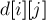

MAXimal
добавлено: 11 Jul 2008 20:45
редактировано: 18 Feb 2013 16:24
Содержание [скрыть]
Правильные скобочные последовательности
Правильной скобочной последовательностью называется строка, состоящая только из символов "скобки" (чаще всего рассматриваются только круглые скобки, но здесь будет рассматриваться и общий случай нескольких типов скобок), где каждой закрывающей скобке найдётся соответствующая открывающая (причём того же типа).
Здесь мы рассмотрим классические задачи на правильные скобочные последовательности (далее для краткости просто "последовательности"): проверка на правильность, количество последовательностей, генерация всех последовательностей, нахождение лексикографически следующей последовательности, нахождение  -ой последовательности в отсортированном списке всех последовательностей, и, наоборот, определение номера последовательности. Каждая из задач рассмотрена в двух случаях — когда разрешены скобки только одного типа, и когда нескольких типов.
-ой последовательности в отсортированном списке всех последовательностей, и, наоборот, определение номера последовательности. Каждая из задач рассмотрена в двух случаях — когда разрешены скобки только одного типа, и когда нескольких типов.
Проверка на правильность
Пусть сначала разрешены скобки только одного типа, тогда проверить последовательность на правильность можно очень простым алгоритмом. Пусть — это текущее количество открытых скобок. Изначально . Будем двигаться по строке слева направо, если текущая скобка открывающая, то увеличим на единицу, иначе уменьшим. Если при этом когда-то получалось отрицательное число, или в конце работы алгоритма отлично от нуля, то данная строка не является правильной скобочной последовательностью, иначе является.
Если допустимы скобки нескольких типов, то алгоритм нужно изменить. Вместо счётчика следует создать стек, в который будем класть открывающие скобки по мере поступления. Если текущий символ строки — открывающая скобка, то кладём его в стек, а если закрывающая — то проверяем, что стек не пуст, и что на его вершине лежит скобка того же типа, что и текущая, и затем достаём эту скобку из стека. Если какое-либо из условий не выполнилось, или в конце работы алгоритма стек остался не пуст, то последовательность не является правильной скобочной, иначе является.
Таким образом, обе эти задачи мы научились решать за время  .
.
Количество последовательностей
Формула
Количество правильных скобочных последовательностей с одним типом скобок можно вычислить как число Каталана. Т.е. если есть  пар скобок (строка длины
пар скобок (строка длины  ), то количество будет равно:
), то количество будет равно:
Пусть теперь имеется не один, а типов скобок. Тогда каждая пара скобок независимо от остальных может принимать один из типов, а потому мы получаем такую формулу:
Динамическое программирование
С другой стороны, к этой задаче можно подойти и с точки зрения динамического программирования. Пусть — количество правильных скобочных последовательностей из пар скобок. Заметим, что в первой позиции всегда будет стоять открывающая скобка. Понятно, что внутри этой пары скобок стоит какая-то правильная скобочная последовательность; аналогично, после этой пары скобок также стоит правильная скобочная последовательность. Теперь чтобы посчитать , переберём, сколько пар скобок  будет стоять внутри этой первой пары, тогда, соответственно, пара скобок будет стоять после этой первой пары. Следовательно, формула для имеет вид:
будет стоять внутри этой первой пары, тогда, соответственно, пара скобок будет стоять после этой первой пары. Следовательно, формула для имеет вид:
Начальное значение для этой рекуррентной формулы — это .
Нахождение всех последовательностей
Иногда требуется найти и вывести все правильные скобочные последовательности указанной длины (в данном случае — это длина строки).
Для этого можно начать с лексикографически первой последовательности  , а затем находить каждый раз лексикографически следующую последовательность с помощью алгоритма, описанного в следующем разделе.
, а затем находить каждый раз лексикографически следующую последовательность с помощью алгоритма, описанного в следующем разделе.
Но если ограничения не очень большие ( до ), то можно поступить значительно проще. Найдём всевозможные перестановки этих скобок (для этого удобно использовать функцию next_permutation()), их будет  , и каждую проверим на правильность вышеописанным алгоритмом, и в случае правильности выведем текущую последовательность.
, и каждую проверим на правильность вышеописанным алгоритмом, и в случае правильности выведем текущую последовательность.
Также процесс нахождения всех последовательностей можно оформить в виде рекурсивного перебора с отсечениями (что в идеале можно довести по скорости работы до первого алгоритма).
Нахождение следующей последовательности
Здесь рассматривается только случай одного типа скобок.
По заданной правильной скобочной последовательности требуется найти правильную скобочную последовательность, которая находится следующей в лексикографическом порядке после текущей (или выдать "No solution", если такой не существует).
Понятно, что в целом алгоритм выглядит следующим образом: найдем такую самую правую открывающую скобку, которую мы имеем право заменить на закрывающую (так, чтобы в этом месте правильность не нарушалась), а всю оставшуюся справа строку заменим на лексикографически минимальную: т.е. сколько-то открывающих скобок, затем все оставшиеся закрывающие скобки. Иными словами, мы пытаемся оставить без изменения как можно более длинный префикс исходной последовательности, а в суффиксе эту последовательность заменяем на лексикографически минимальную.
Осталось научиться искать эту самую позицию первого изменения. Для этого будем идти по строке справа налево и поддерживать баланс открытых и закрытых скобок (при встрече открывающей скобки будем уменьшать , а при закрывающей — увеличивать). Если в какой-то момент мы стоим на открывающей скобке, а баланс после обработки этого символа больше нуля, то мы нашли самую правую позицию, от которой мы можем начать изменять последовательность (в самом деле, 0"> означает, что слева имеется не закрытая ещё скобка). Поставим в текущую позицию закрывающую скобку, затем максимально возможное количество открывающих скобок, а затем все оставшиеся закрывающие скобки, — ответ найден.
Если мы просмотрели всю строку и так и не нашли подходящую позицию, то текущая последовательность — максимальна, и ответа не существует.
Реализация алгоритма:
string s; cin >> s; int n = (int) s.length(); string ans = "No solution"; for (int i=n-1, depth=0; i>=0; --i) { if (s[i] == '(') --depth; else ++depth; if (s[i] == '(' && depth > 0) { --depth; int open = (n-i-1 - depth) / 2; int close = n-i-1 - open; ans = s.substr(0,i) + ')' + string (open, '(') + string (close, ')'); break; } } cout << ans;
Таким образом, мы решили эту задачу за .
Номер последовательности
Здесь пусть — количество пар скобок в последовательности. Требуется по заданной правильной скобочной последовательности найти её номер в списке лексикографически упорядоченных правильных скобочных последовательностей.
Научимся считать вспомогательную динамику , где — длина скобочной последовательности (она "полуправильна": всякой закрывающей скобке имеется парная открывающая, но не все открытые скобки закрыты),  — баланс (т.е. разность между количеством открывающих и закрывающих скобок), — количество таких последовательностей. При подсчёте этой динамики мы считаем, что скобки бывают только одного типа.
— баланс (т.е. разность между количеством открывающих и закрывающих скобок), — количество таких последовательностей. При подсчёте этой динамики мы считаем, что скобки бывают только одного типа.
Считать эту динамику можно следующим образом. Пусть — величина, которую мы хотим посчитать. Если , то ответ понятен сразу: , все остальные . Пусть теперь 0">, тогда мысленно переберём, чему был равен последний символ этой последовательности. Если он был равен '(', то до этого символа мы находились в состоянии . Если он был равен ')', то предыдущим было состояние . Таким образом, получаем формулу:
(считается, что все значения при отрицательном равны нулю). Таким образом, эту динамику мы можем посчитать за  .
.
Перейдём теперь к решению самой задачи.
Сначала пусть допустимы только скобки одного типа. Заведём счётчик глубины вложенности в скобки, и будем двигаться по последовательности слева направо. Если текущий символ ![s[i]](../tex2png/cache/fd6f470cea3a6f4a8e40703f1a939deb.png) () равен '(', то мы увеличиваем на 1 и переходим к следующему символу. Если же текущий символ равен ')', то мы должны прибавить к ответу , тем самым учитывая, что в этой позиции мог бы стоять символ '(' (который бы привёл к лексикографически меньшей последовательности, чем текущая); затем мы уменьшаем на единицу.
() равен '(', то мы увеличиваем на 1 и переходим к следующему символу. Если же текущий символ равен ')', то мы должны прибавить к ответу , тем самым учитывая, что в этой позиции мог бы стоять символ '(' (который бы привёл к лексикографически меньшей последовательности, чем текущая); затем мы уменьшаем на единицу.
Пусть теперь разрешены скобки нескольких типов. Тогда при рассмотрении текущего символа до пересчёта мы должны перебирать все скобки, которые меньше текущего символа, пробовать ставить эту скобку в текущую позицию (получая тем самым новый баланс ), и и прибавлять к ответу количество соответствующих "хвостов" - завершений (которые имеют длину  , баланс и типов скобок). Утверждается, что формула для этого количества имеет вид:
, баланс и типов скобок). Утверждается, что формула для этого количества имеет вид:
Эта формула выводится из следующих соображений. Сначала мы "забываем" про то, что скобки бывают нескольких типов, и просто берём ответ из . Теперь посчитаем, как изменится ответ из-за наличия типов скобок. У нас имеется неопределённых позиций, из которых являются скобками, закрывающими какие-то из открытых ранее, — значит, тип таких скобок мы варьировать не можем. А вот все остальные скобки (а их будет пар) могут быть любого из типов, поэтому ответ умножается на эту степень числа .
Нахождение  -ой последовательности
-ой последовательности
Здесь пусть — количество пар скобок в последовательности. В данной задаче по заданному требуется найти -ую правильную скобочную последовательность в списке лексикографически упорядоченных последовательностей.
Как и в предыдущем разделе, посчитаем динамику — количество правильных скобочных последовательностей длины с балансом .
Пусть сначала допустимы только скобки одного типа.
Будем двигаться по символам искомой строки, с  -го по
-го по  -ый. Как и в предыдущей задаче, будем хранить счётчик — текущую глубину вложенности в скобки. В каждой текущей позиции будем перебирать возможный символ - открывающую скобку или закрывающую. Пусть мы хотим поставить сюда открывающую скобку, тогда мы должны посмотреть на значение . Если оно
-ый. Как и в предыдущей задаче, будем хранить счётчик — текущую глубину вложенности в скобки. В каждой текущей позиции будем перебирать возможный символ - открывающую скобку или закрывающую. Пусть мы хотим поставить сюда открывающую скобку, тогда мы должны посмотреть на значение . Если оно  , то мы ставим в текущую позицию открывающую скобку, увеличиваем на единицу и переходим к следующему символу. Иначе мы отнимаем от величину , ставим закрывающую скобку и уменьшаем значение . В конце концов мы и получим искомую скобочную последовательность.
, то мы ставим в текущую позицию открывающую скобку, увеличиваем на единицу и переходим к следующему символу. Иначе мы отнимаем от величину , ставим закрывающую скобку и уменьшаем значение . В конце концов мы и получим искомую скобочную последовательность.
Реализация на языке Java с использованием длинной арифметики:
int n; BigInteger k; // входные данные BigInteger d[][] = new BigInteger [n*2+1][n+1]; for (int i=0; i<=n*2; ++i) for (int j=0; j<=n; ++j) d[i][j] = BigInteger.ZERO; d[0][0] = BigInteger.ONE; for (int i=0; i<n*2; ++i) for (int j=0; j<=n; ++j) { if (j+1 <= n) d[i+1][j+1] = d[i+1][j+1].add( d[i][j] ); if (j > 0) d[i+1][j-1] = d[i+1][j-1].add( d[i][j] ); } String ans = new String(); if (k.compareTo( d[n*2][0] ) > 0) ans = "No solution"; else { int depth = 0; for (int i=n*2-1; i>=0; --i) if (depth+1 <= n && d[i][depth+1].compareTo( k ) >= 0) { ans += '('; ++depth; } else { ans += ')'; if (depth+1 <= n) k = k.subtract( d[i][depth+1] ); --depth; } }
Пусть теперь разрешён не один, а типов скобок. Тогда алгоритм решения будет отличаться от предыдущего случая только тем, что мы должны домножать значение на величину , чтобы учесть, что в этом остатке могли быть скобки различных типов, а парных скобок в этом остатке будет только , поскольку скобок являются закрывающими для открывающих скобок, находящихся вне этого остатка (а потому их типы мы варьировать не можем).
Реализация на языке Java для случая двух типов скобок - круглых и квадратных:
int n; BigInteger k; // входные данные BigInteger d[][] = new BigInteger [n*2+1][n+1]; for (int i=0; i<=n*2; ++i) for (int j=0; j<=n; ++j) d[i][j] = BigInteger.ZERO; d[0][0] = BigInteger.ONE; for (int i=0; i<n*2; ++i) for (int j=0; j<=n; ++j) { if (j+1 <= n) d[i+1][j+1] = d[i+1][j+1].add( d[i][j] ); if (j > 0) d[i+1][j-1] = d[i+1][j-1].add( d[i][j] ); } String ans = new String(); int depth = 0; char [] stack = new char[n*2]; int stacksz = 0; for (int i=n*2-1; i>=0; --i) { BigInteger cur; // '(' if (depth+1 <= n) cur = d[i][depth+1].shiftLeft( (i-depth-1)/2 ); else cur = BigInteger.ZERO; if (cur.compareTo( k ) >= 0) { ans += '('; stack[stacksz++] = '('; ++depth; continue; } k = k.subtract( cur ); // ')' if (stacksz > 0 && stack[stacksz-1] == '(' && depth-1 >= 0) cur = d[i][depth-1].shiftLeft( (i-depth+1)/2 ); else cur = BigInteger.ZERO; if (cur.compareTo( k ) >= 0) { ans += ')'; --stacksz; --depth; continue; } k = k.subtract( cur ); // '[' if (depth+1 <= n) cur = d[i][depth+1].shiftLeft( (i-depth-1)/2 ); else cur = BigInteger.ZERO; if (cur.compareTo( k ) >= 0) { ans += '['; stack[stacksz++] = '['; ++depth; continue; } k = k.subtract( cur ); // ']' ans += ']'; --stacksz; --depth; }